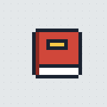

Recipe Box has moved
It's now at app.bakfan.com. Your recipes, meal plans, grocery lists and sync come with you in one tap.
Your data is encrypted on this phone before it's sent, and the link works once. Nothing here is deleted.
One more step
Your data is ready. Because Recipe Box is on your Home Screen, finish in the new one:
- Tap Copy move link.
- Open app.bakfan.com in Safari, tap Share, then Add to Home Screen.
- Open the new Recipe Box from your Home Screen and tap Paste move link.
The link works once, for 24 hours. Don't want it on your Home Screen? Open it here instead.
Moved to app.bakfan.com
Recipe Box lives at its new address now. This copy is kept as it was, just in case.
Open Recipe BoxMissing something at the new address? or .
Recipe Box has moved
It's now at app.bakfan.com.
Open Recipe Box